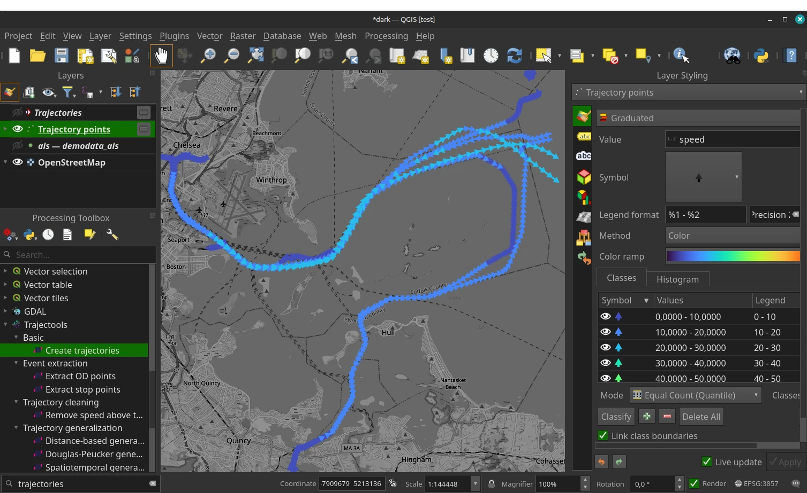
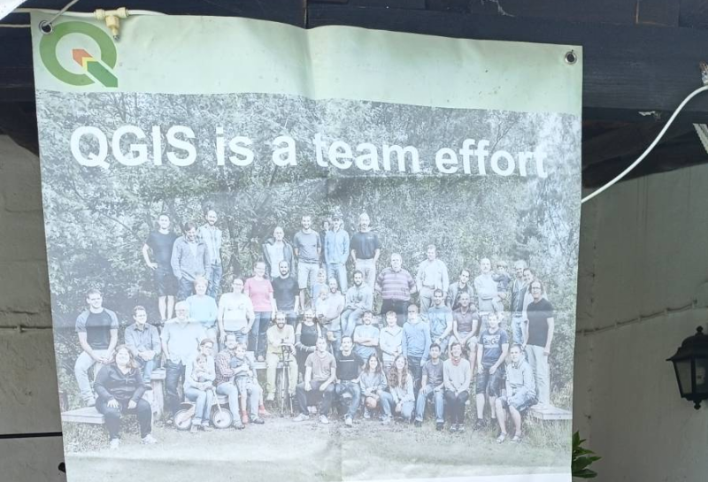
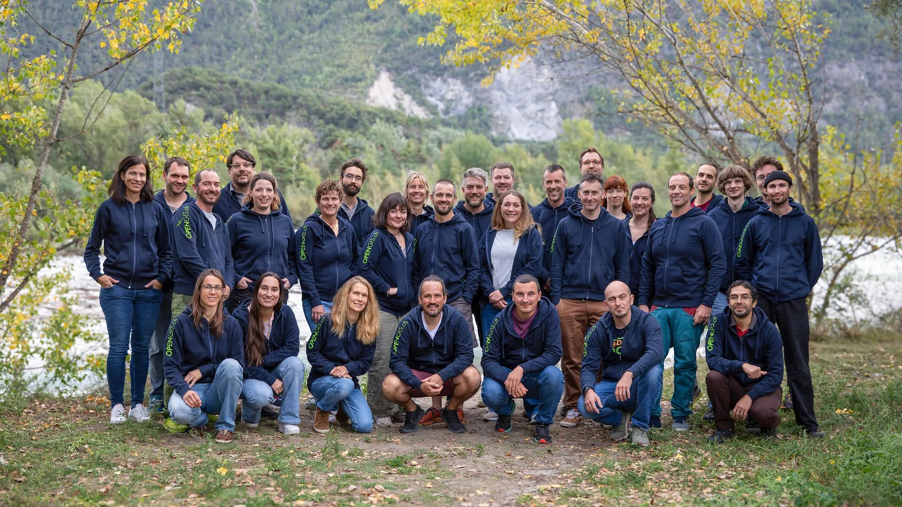
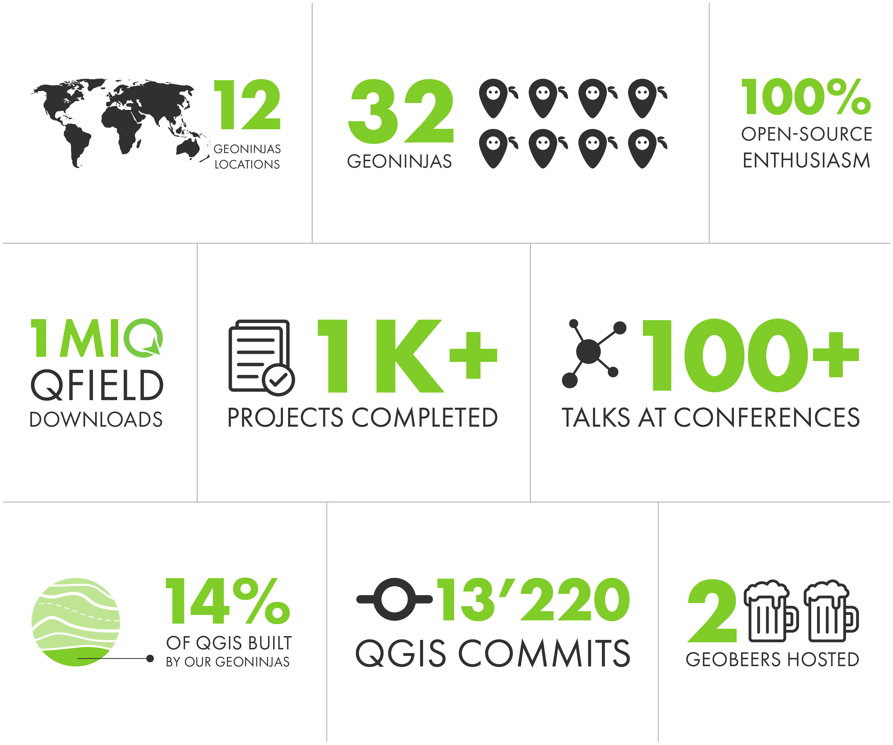

Who Pays Your Bills?
Sustainability, Community & Business:
The Open Source Triangle
Marco Bernasocchi
Founder OPENGIS.ch · Creator QField.org · Chair QGIS.org · VP OSGEO.org
The actors
QGIS[.org]
Association behind the leading FLOSS GIS (20M opening/Month)

The actors
QField[.org] for QGIS
Collect, edit and visualise geodata on the field
- DPG
- ~2M downloads
- 500K Active user per month
- Android, iOS, Windows, MacOS, Linux

The actors
OPENGIS.ch
Company steering QField and one of the main two contributor to QGIS
The Question
“Who pays your bills?”
- First thing my now-CTO asked me
- Back when we didn’t even know each other
- A question that shaped our journey
“Who pays your bills?”
the brief story of a non-bandit
The Challenge of Open Source
Open source is everywhere
- Who and how is it funded?
- Free = no cost?
- Cathedral or Bazaar?
The Open Source Triangle
Product · Community · Business
- How do they combine?
- How to push each?
- What keeps the triangle sustainably alive?

Product
The brain
- QGIS / QField → solving real-world problems
- Focus on user needs
- Doocracy

Product
Vision

Product
Vision

Community
The heart
- Users, contributors, volunteers, partners, …
- Transparency, respect, and trust as currency

Business
The legs
- Product development
- Services: consulting, training, support
- Subscriptions: QFieldCloud
- Partnerships, memberships, sponsorships, donations
Business
QGIS · The vibrant bazaar
- QGIS.org governance & funding
- Multiple developers
- Complete openness
- Harder to steer requirements
Business
QField · The cathedral with bazaar doors
- Pushed by OPENGIS.ch
- Single main developer
- Complete openness
- Easier to steer requirements
Our Journey
OPENGIS.ch
- Passion turned into a company of ~40
- First hire → the toughest but most defining decision
- Along the way: 7 jobs, 20 hats, 1000 decisions but still 0 doubts :)

SOME
NUMBERS?

How We Financed QField
- Early client projects funded first features
- Cross-financing from consulting & training
- Internal investments
- Built a subscription model (QFieldCloud)
- Reinforced by sponsorships & donations
How We Made QField
a Success
- Focused on real-world use cases from day one
- Combined bazaar energy with cathedral clarity
- Tight feedback loop with field users
- Invested in UX & mobile convenience
Monetise convenience
not freedom
👉 Not selling free(dom), but convenience & assurance

CONNECTING
THE DOTS

QGIS Sustainability
Initiative
- Launched by OPENGIS.ch to invest in hidden but essential tasks
- Funded through support contracts:
- Every >10 day contract donates dev time
- Unused support hours are donated too
- Covers: bugfixing, code reviews, core maintenance, onboarding new devs
- Ensures QGIS & QField remain stable, modern, and reliable
👉 Turning client support conviniently into long-term sustainability
The Open Source Triangle
Community ↔ Product ↔ Business
- Balance creates sustainability
- Too much weight on one → instability
Lessons Learned
- Build value first, monetise sustainably
- Diversify revenue streams
- Keep upstream healthy → business survives
Risks & Mitigations
- Key-person risk → team & docs
- Financial shocks → reserves & diversification
- Fork fatigue → contribute upstream
- Be good open-source citizens
Why This Matters Beyond Us
- Open source is a real business opportunity with fantastic side-effects
- Public money → public code
- Developers can make a living while staying open

Takeaways
- Support the open source you rely on
- Community pays back
- Sustainability is not magic. It’s a loop.
- (Good) business models = enablers, not enemies
- Monetise convenience, not freedom
Want to know more?
QGIS User conference and contributor meeting 2026
- 4-9 October 2026
- Laax, Switzerland
- conference.qgis.org
And
who pays your bills?
Thank you 🙏 Questions?